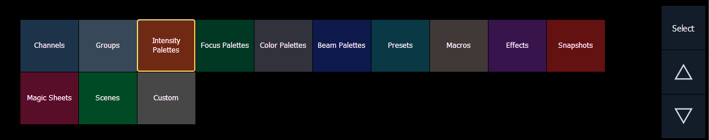

Direct selects are buttons that provide quick access to channels and various other targets. Each type of direct select is colored coded.
To open the direct selects, press the direct select icon on the Home Screen or use [Tab] [4]. Select a direct select type by pressing the corresponding button.

The following is a list of the types of direct selects available and their colors:
If there are more items than can be viewed at once, you may view subsequent pages by using the page touchbuttons ({p}, {q}) by the direct selects. Hold a page button down and type a number to jump to a specific direct select.
When storing to direct selects (groups, palettes, presets, and so on), you may store directly to them by pressing [Record] {Direct Select Key}.
When the direct select is chosen and on the command line, it will have a gold border around it. If content is available for selected channels, the tile is highlighted. An unrecorded direct select will have a dark background with dark gray text.
Note: To adjust the brightness of the direct selects, use the Color Brightness fader in Setup. When the fader is set to 0, the color coding is removed. See Direct Selects Brightness for more information.
You can record decimal inserts to a direct select ({Group 7.1}, {Color Palette 15.5}, {Preset 6.94}, and so on). Use the {Increment} setting in the Direct Selects Configuration Menu to set how the numbers will display.
For Example:
Assume you have stored color palette 1 (button 1), color palette 1.1 (button 2), and color palette 3 (button 3). If you record color palette 2, it will appear in the slot just after color palette 1.1 and color palette 3 will be bumped one slot to the right. This will continue until an open slot can absorb the displaced target.
To change the direct select type, press the {Select} button. See Direct Selects Configuration Menu for more information about the {Select} button.